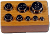
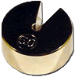

| Material: | ||||
| Clave | Material | Cantidad | Maletín | |
|
I-NT-000P7210-05C | 1 | E | |
|
I-NT-000P7230-01M | 1 | E | |
|
I-NT-000P5310-01F | 1 | E | |
| I-NT-000P7240-01C | 2 | E | ||
|
I-NT-000P7240-01D | 2 | E | |
| I-NT-000P7230-04E | 1 | E | ||
|  | I-NT-000P1120-01B | 1 | E | |
|
I-NT-000P1220-02A | 1 | Almacén 1 | |
| I-NT-000P1220-02D | 2 | F | ||
|
I-NT-000P1220-02C | 1 | F | |
|
I-NT-000P1220-02B | 1 | F | |
|
I-L3-00VA2815 | 1 | F | |
| I-L3-00PR2220 | 1 | E | ||
|  | I-NT-000P1120-02F | 2 | E |